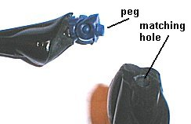
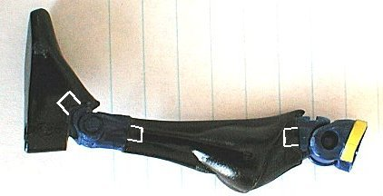

This article is meant to document my initial attempts at adding articulation to a custom action figure. I am by no means an expert on the subject. Customizers like Spinner and Brian Orban are much more experienced at this process. However, the information provided below should give you a starting point if you want to add posability to a figure.
|
Base figure - 5 articulation points |
The test subject is the Legends of the Dark Knight Dark Knight Detective (how's that for redundancy?) Batman figure. After searching high and low for this figure, and eventually paying way too much money, I finally obtained one. It's an incredible sculpt, but 5 points of articulation is pretty poor for a Batman figure - enter the scalpel. |
Finished custom - 13 articulation points |
|
My secondary goal after adding articulation was to maintain the integrity of the sculpt. This meant choosing "donor" figures with joints as close as possible to the Batman figure. For the knees and ankles, I chose the X-Man figure. X-Man is considerably smaller than Batman, but his knee and ankle joints are almost perfect scale. As you can see in the picture to the right, X-Man's ankles and right knee have been transplanted onto the Batman figure. Below are some close-ups and explanations of how this was done. |
|
|
|
Before making any cuts, I looked closely at each figure from various angles to make sure the new joint would fit in terms of size and style. I then marked the respective limbs and cut out the joints. The picture to the left shows how well the replacement joint is aligned and sized with the original limb. |
|
As shown below, I tried to leave a peg on the new joint (I forgot on a couple of occasions) so that I could create a strong connection. I drilled a hole in the adjoining limb for the peg to be inserted into.  |
 Here is the assembled leg. The white lines show the approximate location of the inserted pegs. Superglue was used to secure the connection. |